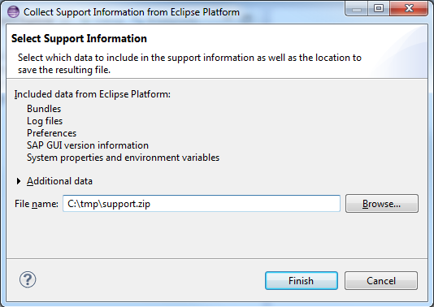
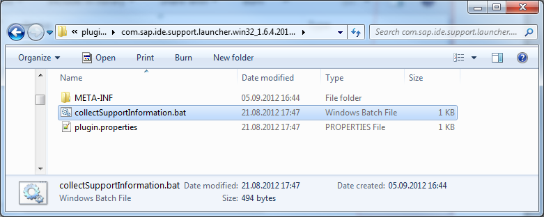
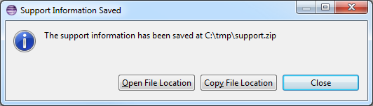

You can launch the Support Information Collector to create a support file in two different use cases:
(A) By using the IDE menu function - this is always the case if the IDE is currently up and running.
(B) As a standalone utility by launching the corresponding scripts - this would be the case if the UI of your IDE did not react anymore.
To create the support information file, starting from the IDE UI (case A), proceed as follows:

Figure: Dialog when creating a support information file
To create the support information file by starting the corresponding script from the plug-ins folder (case B), proceed as follows:
TIP: If multiple versions of this support plug-in are installed on your local drive, take the most recent one.

Figure: Plug-in folder that contains scripts for the Support Information Collector
There are different scripts available that correspond to the respective operating system:
| OS | Script File |
| Windows | collectSupportInformation.bat |
| Linux | collectSupportInformation.sh
TIP: Run the script using the command line:
|
| Mac OS X | collectSupportInformation.sh. |
The support files are generated, bundled in a ZIP file, and stored on the specified location on your local drive.
Upon completion, a dialog window informs you about the status and provides you with the options to close the procedure, navigate to the file location, or copy the location to the clipboard.

Figure: Dialog that appears after creation of the support file